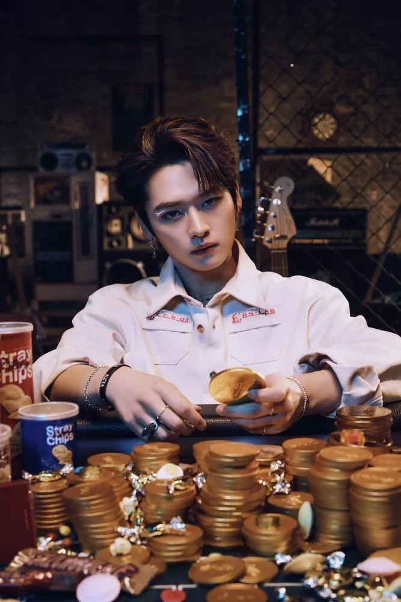
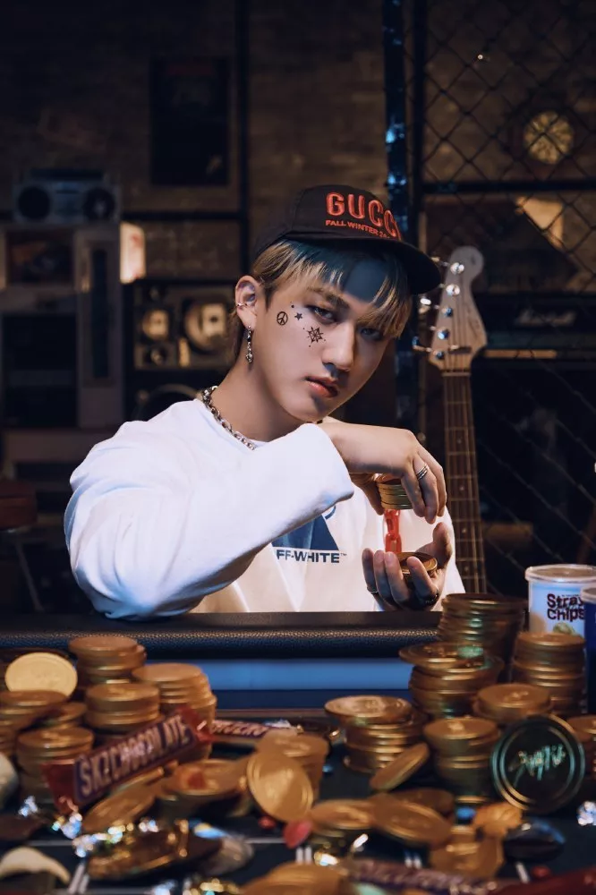
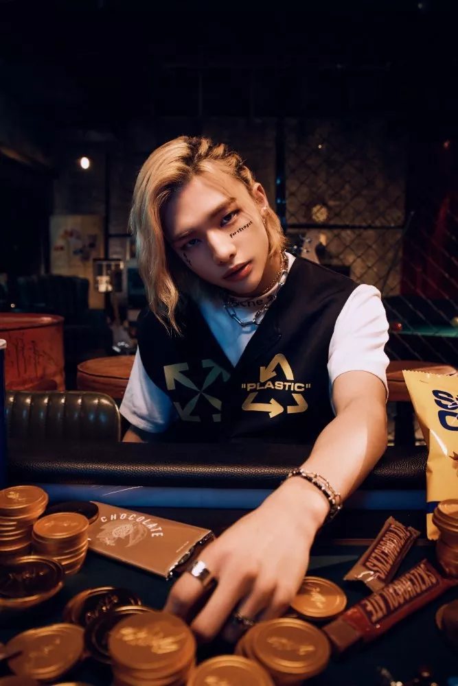
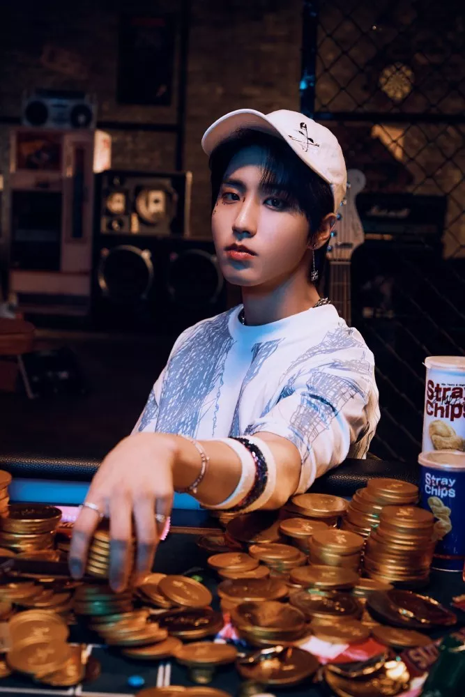
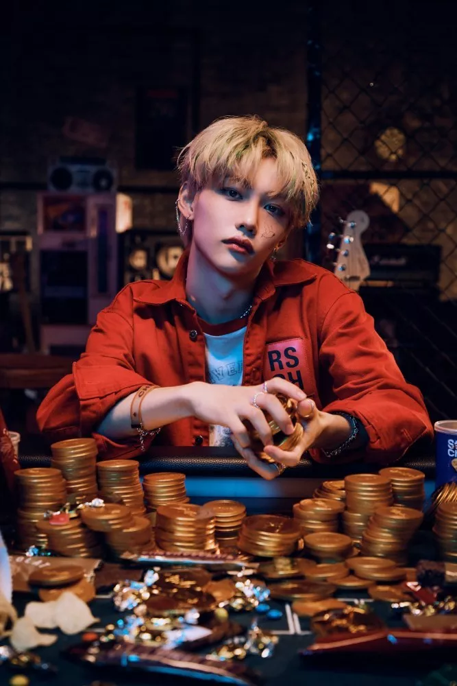
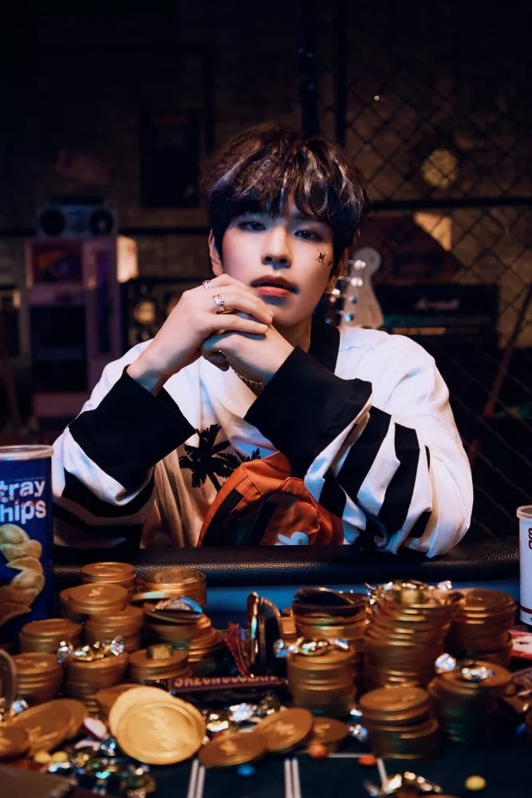
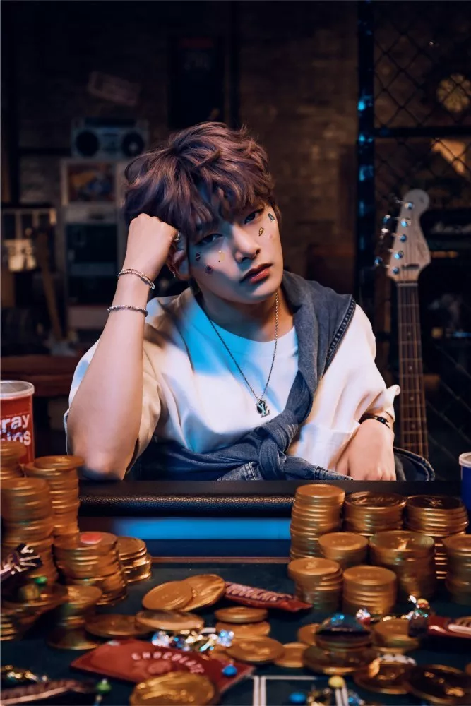

Bang Chan
Bang Chan sa narodil 3. októbra 1997 v Soule v Južnej Kórei. Je lídrom a producentom, spevákom a
tanečníkom skupiny Stray Kids.
Bang Chan sa narodil v Soule ako najstarší syn z troch detí (má sestru Hannah a brata Lucasa). V
detstve sa Bang Chan presťahoval do Sydney v Austrálii a mnohokrát sa sťahoval. Navštevoval
hodiny tanca vrátane baletu a moderného tanca na Newtown High School of the Performing Arts. Rád
sa venoval aj športu a získal mnoho ocenení za plávanie, keďže jeho otec bol inštruktorom
plávania.
Po presťahovaní do Južnej Kórey absolvoval strednú školu Cheongdam.

Lee Know
Lee Know sa narodil 25. októbra 1998 v Gimpo v Južnej Kórei. Je hlavným tanečníkom, spevákom a
vizuálom skupiny Stray Kids.
Lee Know vyrastal v meste Daegot-myeon a navštevoval základnú školu Daegot. Keď chodil na
strednú školu, pozrel si tanečné video, ktoré v ňom vyvolalo túžbu chodiť na hodiny tanca.
Prihlásil sa do štúdia Souldance a zostal tam päť rokov, pričom navštevoval hodiny Bico Lim.
Vyštudoval technickú strednú školu Gimpo Jeil v odbore počítačové vedy. V určitom období
absolvoval prijímacie skúšky na Chugye University For The Arts s vlastnou choreografiou a v
marci 2017 nastúpil na univerzitnú pôdu.

Changbin
Changbin sa narodila 11. augusta 1999 v juhokórejskom meste Yongin. Je hlavným raperom a
producentom skupiny Stray Kids.
Navštevoval základnú školu Galmoe. Strednú školu Bora ukončil 6. februára 2018. V súčasnosti
študuje na Gukje Cyber University v rámci odboru zábavných štúdií.
Dňa 30. marca 2023 bol Changbin menovaný do čestného klubu The Promise ako hlavný darca za to,
že daroval viac ako 100 miliónov wonov na pomoc obetiam zemetrasení v Turecku a Sýrii.

Hyunjin
Hyunjin sa narodil 20. marca 2000 v Soule v Južnej Kórei. Je hlavným tanečníkom, raperom a
vizuálnym umelcom skupiny Stray Kids.
Vyrastal so psom Kkomi, ktorý bol jeho domácim miláčikom. Ako dieťa navštívil Las Vegas, kde
používal svoje anglické meno Sam. Dňa 15. novembra 2018 zložil skúšku suneung. Školu
múzických umení (SOPA) ukončil 15. februára 2019. V súčasnosti je zapísaný na Global Cyber
University, kde študuje praktickú angličtinu.
Dňa 30. marca 2023 bol Hyunjin menovaný do čestného klubu The Promise ako hlavný darca za
to, že daroval viac ako 100 miliónov wonov na pomoc obetiam zemetrasení v Turecku a Sýrii. V
júli 2023 sa Hyunjin stal globálnym veľvyslancom značky Versace.

HAN
HAN sa narodil 14. septembra 2000 v juhokórejskom meste Inčchon. Je hlavným raperom,
spevákom a producentom skupiny Stray Kids.
Vo veku 9 rokov sa presťahoval do Malajzie, kde sa učil doma. Pri písaní piesní ho
ovplyvnili hip-hopoví umelci ako Epik High a Zico a o spev sa začal zaujímať, keď počul
skladbu "Two Melodies" od Zion.T. V 16 rokoch sa vrátil do Južnej Kórey, aby zložil kórejskú
maturitu. Myslel si, že ak sa vráti do Malajzie, nikdy nebude mať šancu stať sa spevákom, a
tak sa s rodičmi dohodol, že ak sa do roka nedostane do agentúry, vráti sa do Malajzie
študovať.
Koncom roka 2019 spoločnosť JYP Entertainment uviedla, že HAN trpí občasnou úzkosťou v okolí
neurčitého počtu ľudí.

Felix
Felix sa narodil 15. septembra 2000 v austrálskom Sydney. Je tanečník, rapper a člen skupiny
Stray Kids.
Felix sa narodil rodičom kórejským prisťahovalcom, vyrastal na predmestí Seven Hills.
Vzdelanie ukončil na maristickej škole St Patrick's College. Felix prišiel do Južnej Kórey
14. februára 2017. V marci 2022 spoločnosť JYP Entertainment oznámila, že Felixovi
diagnostikovali herniu platničky.
Dňa 4. januára 2024 bolo oznámené, že Felix daroval 100 miliónov wonov na pomoc laoským
deťom trpiacim zlou hygienou a výživou, čím sa stal najmladším členom Čestného klubu UNICEF
a prvým členom v roku 2024.

Seungmin
Seungmin sa narodil 22. septembra 2000 v Soule v Južnej Kórei. Je hlavným spevákom skupiny
Stray Kids.
K baseballu ho priviedol jeho starý otec. Sníval o tom, že sa stane hráčom bejzbalu, preto
na tom tvrdo pracoval, ale kvôli zraneniu a iným problémom musel prestať. Napriek tomu sa mu
už odmalička páčil spev. Vo štvrtej triede základnej školy sa zúčastnil na súťaži v spievaní
detských riekaniek, vyhral cenu a prihlásil sa do speváckeho zboru. Na strednej škole, keď
premýšľal, čo by mal robiť, aby bol v živote šťastný, myslel na "hudbu", a tak študoval a
cvičil spev, aby sa zapáčil rodičom. Angličtinu sa naučil, keď odišiel na tri mesiace do Los
Angeles.
Pred niekoľkými rokmi si Seungmin vyhľadal vlastného učiteľa spevu mimo JYP Entertainment,
aby zlepšil svoje spevácke schopnosti. Navštevuje hodiny ladenia hlasu s I.N.

I.N
I.N sa narodil 8. februára 2001 v juhokórejskom Busane. Je spevák a maknae skupiny Stray
Kids.
Na strednej škole si uvedomil, že ho baví spievať a v 8. triede začal chodiť na konkurzy. V
novembri 2017 bol prijatý na SOPA (School of Performing Art) v odbore aplikovaná hudba a
spev. Štúdium ukončil 5. februára 2021. Jeongin sa zúčastnil konkurzu pre spoločnosť JYP
Entertainment, keď táto spoločnosť prišla do Busanu, a po druhom pokuse bol prijatý.
Jeho individuálnu fotografiu a meno spoločnosť oficiálne odhalila 13. októbra 2017 na
poludnie, a to pre jeho účasť v nadchádzajúcej šou o prežití Stray Kids.
